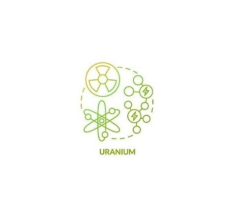
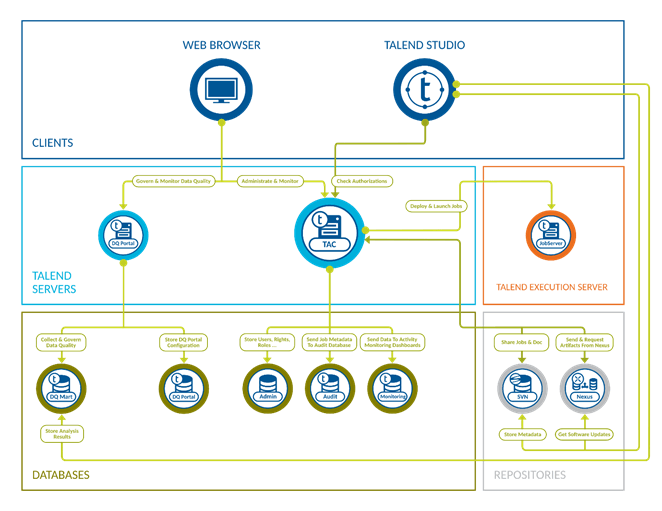
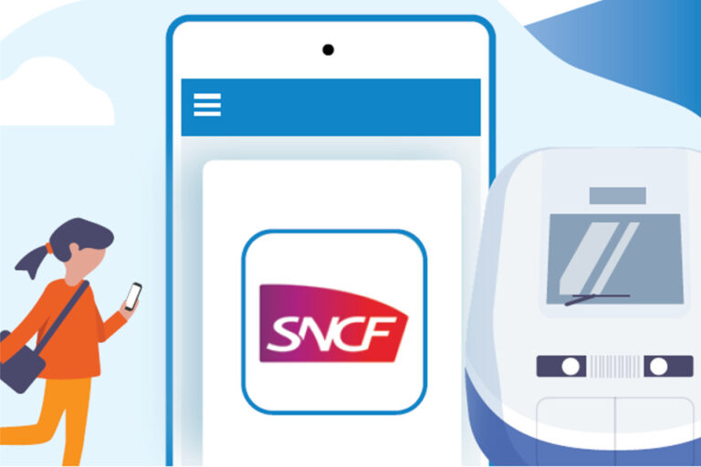
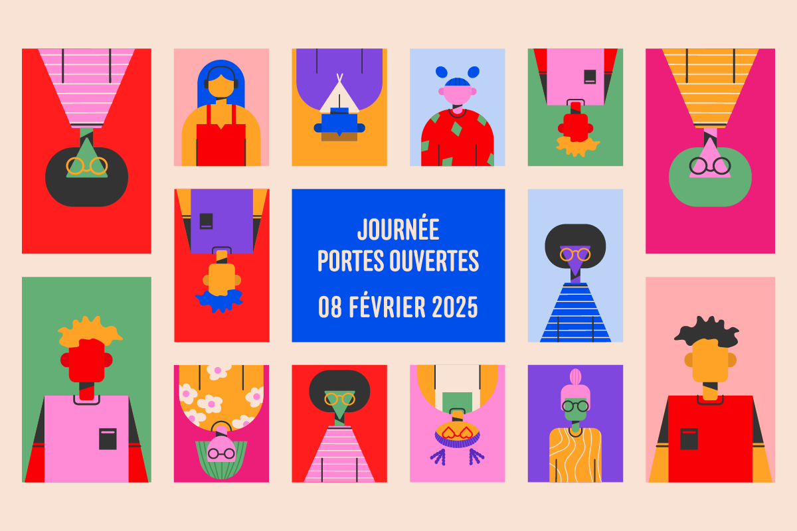
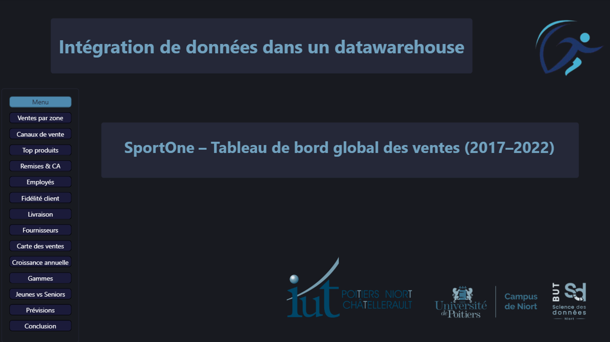
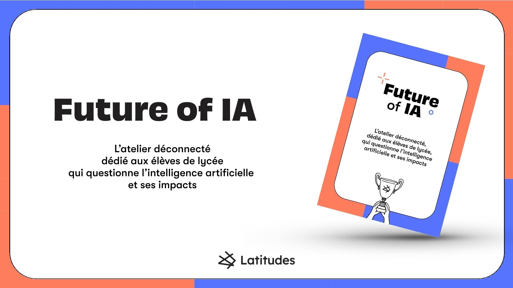
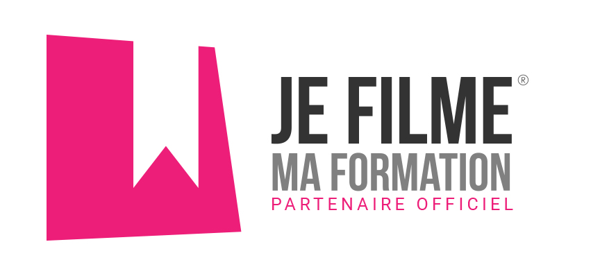
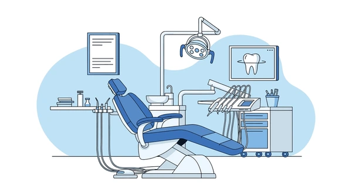
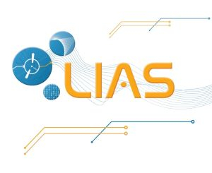
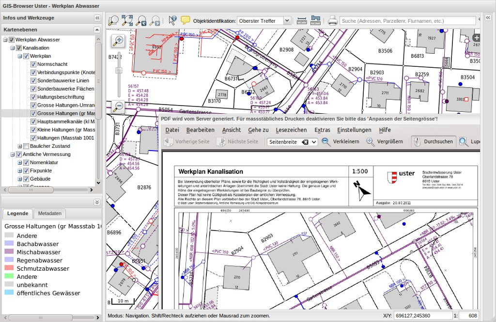

Projets de ma deuxième année

Série temporelle - Uranium & Statistiques

Talend - Alimentation d'une étoile de gestion des ventes
Conformité réglementaire pour traiter / analyser des données (RGPD)

Collecte de données web - Web & SNCF

Automatisation du traitement des données dans un tableur - VBA & Google Apps Script

Intégration de données dans un datawarehouse

Répondre aux besoins du territoire

Je filme ma formation (concours)

API & Web Scraping - Collecte automatisée de données

Création d'une Base de Données de Gestion d'une Clinique Dentaire

Analyse bibliométrique d'un laboratoire de recherche - Solution décisionnelle
Reporting d'une analyse multivariée - Pauvreté en France
